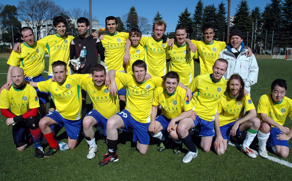

SHANE FC |

|
|
Back Row: Sam Aynsley, Jon Coombes, Neil OMaonaigh Lennon, Edson Ruiz, Adam Beaumont, Andy Scott, Dan Kelly, Riaz Donaldson, Mark Gardner. |
Shane FC represents a community of like-minded people who enjoy both Footy and the Razz. At the end of any given match you will invariably find us Shane lads drinking a well earned beer and welcoming anyone in sight to come and join the party. |
|
UNIFORM: |
close |